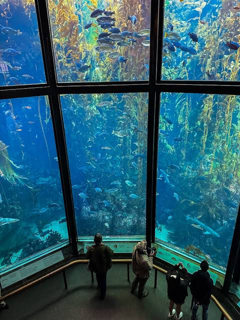
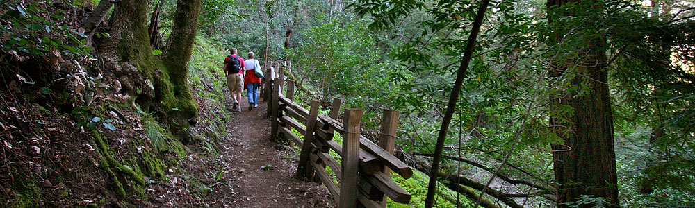
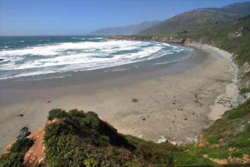
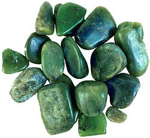
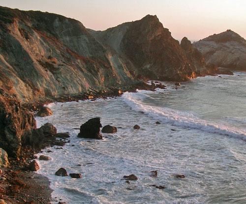
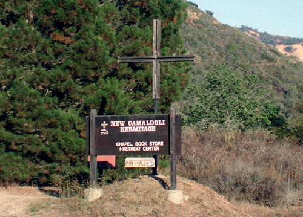
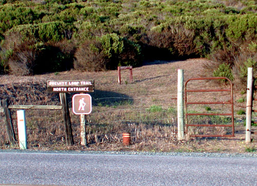
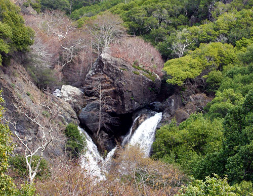
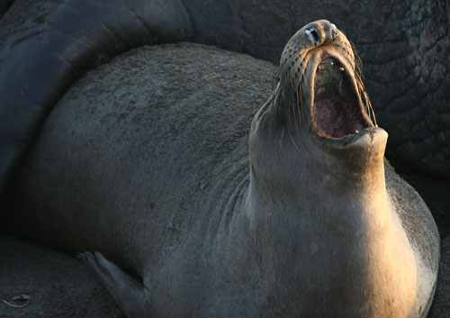

~1.5 Hrs North
Monterey Bay Aquarium
One of the world's great aquariums, set right on Monterey Bay — a full day trip north along scenic Highway 1.

Activities & Links
Big Sur, Right Outside Your Door
Traveling either north or south from Lucia Lodge, less strenuous but equally rewarding options are available for visitors of all ages and skill levels. Highway 1 itself has been ranked among the most scenic drives in the country — the activities below are grouped into three categories: beach access, hiking, and day trips.
Beach Access
Several beaches are tucked in all along the Big Sur coast. These beaches vary depending on time of year and can offer everything from sunbathing to tide pool exploration.

The largest beach on the south coast of Big Sur, sitting at the base of cliffs beside the Pacific Valley fields — a rare stretch of horizontal land once occupied by the Salinan people. The crescent-shaped beach takes its name from the sand dollars that regularly wash ashore. A stairway of 98 steps leads down to the sand.

The single most famous spot on the coast for finding jade, prized for its variety of shapes, sizes, and colors — Big Sur jade ranks among the finest in the world. Native Californians used jade from this cove for tools and ornaments long before it drew rockhounds from around the globe. Jade is replenished after winter storms break loose new material from the shore and seabed; note that jade may only legally be collected below the high-tide line.

A popular spot to find jade, fed by a creek that drains an area of Big Sur once famous for gold discovered during the Gold Rush. Willow Creek is unique for offering a drive right down to the beach, with a lower parking lot next to the ocean and the creek itself.
Hiking
Most hiking spots near Lucia Lodge sit on U.S. Forest Service land within the Los Padres National Forest. Trails are free to hike, dogs must stay leashed, and it's worth watching for poison oak along the way.
The ocean bluffs above the Pacific Valley fields are laced with trails running roughly north to south. Pull off nearly anywhere along the road, cross through a fence ladder, and meander down to the bluffs for open coastal scenery. The trail eventually leads to the bluffs above Sand Dollar Beach.

The closest hike to Lucia Lodge, this mile-long paved road climbs to the New Camaldoli Hermitage, a working Benedictine monastery. Stunning water and land views open up as the road switches back toward the top. Once there, visit the Hermitage gift shop or sit in on one of the four daily services, held at 5:30 AM, 7 AM, 11:30 AM (Mass), and 6:30 PM. Picnic benches line the route.

The next-closest hike south of Lucia, on the inland side of the highway. Though the full loop runs 12 miles and should only be attempted by experienced hikers in good trail conditions, most visitors enjoy the scenic round-trip hike from the north entrance — a canyon trail that follows a creek past a waterfall, with switchbacks revealing ever-expanding coastal views. Continue further and the trail opens into a young redwood grove, the shaded forest floor a welcome contrast to the exposed switchbacks below.
A short, easy walk to a memorial redwood grove — the southernmost grove of coastal redwoods (Sequoia sempervirens) on the West Coast. Ferns line the edges of the creek, and there's room to wander among the trees at a relaxed pace.

A very popular short hike, good year-round. Salmon Creek is a State Wildlife Preserve, and the falls drop roughly 100 feet. As with most well-known Big Sur hikes, expect company — especially on weekends.
Day Trips
Beyond what's within walking distance, a handful of destinations up and down Highway 1 make for a memorable full-day excursion.

One of the world's great aquariums, set right on Monterey Bay — a full day trip north along scenic Highway 1.
The historic Hearst estate offers guided tours of its opulent rooms, grounds, and pools — a striking contrast to Big Sur's wild coastline.

Home to roughly 6,000 elephant seals year-round, swelling to as many as 17,000 during breeding and molting season. A boardwalk and interpretive signs lead to close-up viewing areas.
Plan Your Days
Wake up minutes from the trailheads, beaches, and views above — book direct for the best available rate.